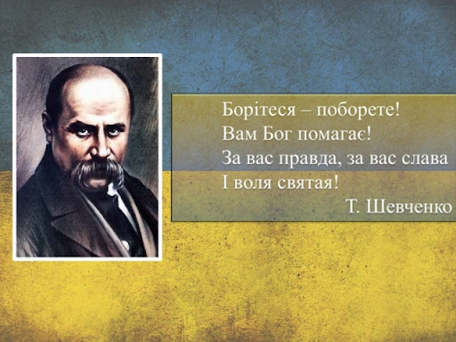
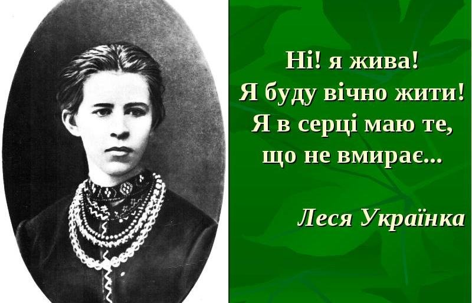
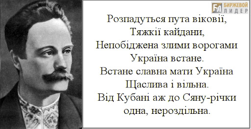
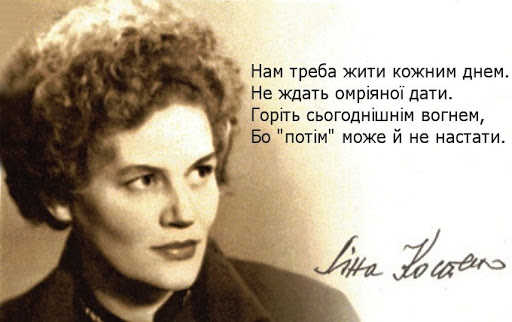
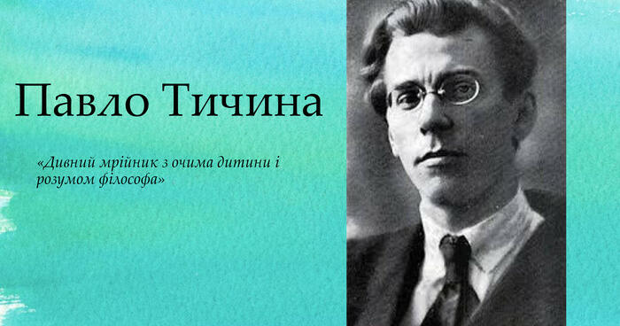
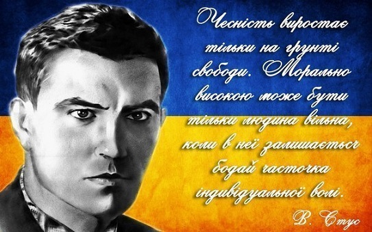
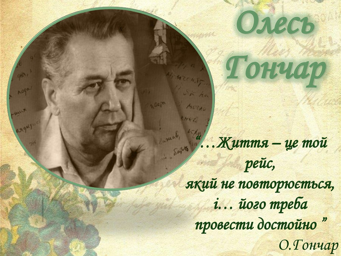

Відомі українські письменники минулого і сучасності (19, 20, 21 століття) боролися за рідну мову, за літературу, і саме через любов до творчості, через патріотизм страждали. Вони зробили великий крок у розвитку української культури та українського слова.
Тарас Григорович Шевченко
(9 березня 1814 – 10 березня 1861)
Шевченко — український поет, письменник (драматург,прозаїк), художник (живописець, гравер), громадський та політичний діяч. Тарас Шевченко був яскравим прибічником української літератури та української мови, був патріотом своєї держави, за що й страждав: декілька раз арештований, відбував термін у засланні тощо. Член Кирило-Мефодіївського братства. Академік Імператорської академії мистецтв (1860). До ранньої творчості Шевченка належать балади «Причинна» (1837), «Тополя» (1839) й «Утоплена» (1841). На засланні поет почав свою творчість поезією «Думи мої, думи мої» (1847) Наприкінці життя Шевченко почав перекладати «Слово о полку Ігоревім» (1860).
леся українка
(справжнє ім’я: Лариса Петрівна Косач-Квітка; 1871-1913)
Леся Українка — українська письменниця, перекладач, культурний діяч. Творчості поетеси притаманні такі жанри, як: поезія, лірика, епос, драма, проза тощо. Також працювала в ділянці фольклористики (220 народних мелодій записано з її голосу) і брала активну участь в українському національному русі. Відома завдяки своїм збіркам поезій «На крилах пісень» (1893), «Думи і мрії» (1899), «Відгуки» (1902), поем «Давня казка» (1893), «Одно слово» (1903), драм «Бояриня» (1913), «Кассандра» (1903–1907), «В катакомбах» (1905), драма-феєрія «Лісова пісня» (1911) та ін.
Іван Якович Франко
(1856-1916)
Франко – український письменник, поет, публіцист, перекладач, вчений, громадський і політичний діяч. Доктор філософії (1893 р.), дійсний член наукового товариства ім. Т.Г. Шевченка (1899 р.), почесний доктор Харківського університету (1906 р.) Франко був надзвичайно працьовитим, тому виявив себе на багатьох ділянках української культури. Новаторською для публіки була збірка поезії «З вершин і низин» (1887). Проза Франка охоплює понад 100 оповідань, новел, 10 повістей, романів. Вершиною прози Франка є соціальний роман «Борислав сміється» (1882) У драматургії Франко виявив себе майстром соціально-психологічної та історичної драми й комедії «Сон князя Святослава» (1895).
Ліна Василівна Костенко
(19 березня 1930)
Ліна Костенко — українська письменниця-шістдесятниця. Лауреат Шевченківської премії (1987), Премії Антоновичів (1989), премії Петрарки (1994). Брала активну участь у дисидентському русі, за радянського часу, через це була надовго виключена з літературного процесу. Авторка поетичних збірок «Над берегами вічної ріки» (1977), «Неповторність» (1980), «Сад нетанучих скульптур» (1987), роману у віршах «Маруся Чурай» (1979, Шевченківська премія 1987), поеми «Берестечко» (1999, 2010). 2010 року опублікувала перший прозовий роман «Записки українського самашедшого», що став одним з лідерів продажу серед українських книжок у 2011 році. Почесний професор Києво-Могилянської академії, почесний доктор Львівського та Чернівецького університетів.
Павло Григорович Тичина
(1891-1967)
Тичина – український поет, перекладач, публіцист, громадський діяч. Новатор поетичної форми. Директор Інституту літератури АН УРСР (1936–1939, 1941–1943). Член-кореспондент Болгарської академії наук (1947). Лауреат Сталінської премії (1941). Лауреат Шевченківської премії (1962). У 1912 році в журналі «Літературно-науковий вісник» вперше надрукували твір Тичини, це був вірш «Ви знаєте як липа шелестить». Тичина видав низку поетичних збірок і за повоєнного часу: «Могутність нам дана» (1953), «Зростай, пречудовий світе» (1960), «Комунізму далі видні» (1961) тощо. Автор слів Гімну Української РСР.
Василь Семенович Стус
(1938 — 1985)
Стус — український поет, перекладач, прозаїк, літературознавець, правозахисник. Один із найактивніших представників українського культурного руху шістдесятників. Лауреат Державної премії ім. Т. Шевченка (1990), Герой України (2005). Письменник був прибічником того, що українська культура має зберігатися та розвиватися, за що зазнав репресій з боку радянської влади, його творчість була заборонена, а він сам був засуджений до тривалого перебування в місцях позбавлення волі, де й загинув. Його перу належать збірки віршів, такі як: «Круговерть» (1965), «Зимові дерева» (1970), «Веселий цвинтар» (1971)
Олесь Терентійович Гончар
(1918-1995)
Олесь Гончар – український радянський письменник, літературний критик, громадський діяч. Лауреат Сталінської премії (1948), перший лауреат премії імені Тараса Шевченка (9 березня 1962), голова Спілки письменників України (1959–1971), академік НАН України (1978). В кінці 40-х і на початку 50-х років він пише низку новел («Модри Камень», «Весна за Моравою», «Ілонка», «Гори співають» тощо) Роман «Собор» був опублікований у журналі «Вітчизна» у 1968 році. Перші рецензії на роман були схвальні, але невдовзі критика заборонила, і твір було вилучено з літературного процесу на два десятиліття.
Як правильно обрати ліжко?
При виборі ліжка в інтернет магазині Вам в першу чергу потрібно вибрати матеріал. Найбільшою популярністю користуються дерев'яні ліжка, виготовлені з вільхи, ясена чи дуба. Такі моделі чудово прикрасять Вашу спальню у квартирі чи приватному будинку. Для орендованих квартир, під здачу, більше підійде ліжко з металу, так як воно просто «не вбивається», а також має дуже демократичну ціну.
Для Вашої зручності ліжко може комплектуватись висувними ящиками або підйомним механізмом. Ящики можуть бути з одного боку ліжка або з двох. Також є моделі, з висувними ящиками спереду. Ліжка з підйомним механізмом, це відмінне рішення, для невеликих кімнат, вони дозволяють заощадити простір і мають велику нішу для зберігання постільної білизни. Всі дерев'яні ліжка комплектуються буковими ламелями. Спальне місце з ламельною основою може витримувати навантаження до 150 кг на одне спальне місце. Відстань між ламелями, у своїй має бути 2,5-3 див.
Кожне ліжко може бути забарвлене у різні кольори: чорні, білі, сірі, венге, у кольорі горіх. Завдяки цьому ліжко можна підібрати під будь-який інтер'єр.
Оформлення вітальні. Які м'які меблі краще вибрати?

Вітальня – це основна кімната у кожному будинку. Саме вона служить для прийому гостей, проведення часу всією сім'єю та просто для відпочинку у приємній теплій атмосфері. Оформляючи свій будинок та вітальню зокрема, всі намагаються зробити її максимально зручною, комфортною та красивою. Основним та центральним елементом оформлення вітальні, як і будь-якої іншої кімнати, є м'які меблі.
Будь-які меблі для вітальні повинні бути не тільки стильними і красивими, але і функціональними. На таких меблів має бути зручно та приємно відпочивати та приймати гостей. Однак сьогодні існує величезна різноманітність найрізноманітніших м'яких меблів для вітальні, яка підходить для кімнат різних розмірів і форм. На чому варто зупинити свій вибір? Як краще оформити свою вітальню, щоб вам було комфортно, а гості хотіли приходити до вас знову та знову?
На сайті інтернет магазину Кровато представлено велику різноманітність м'яких меблів для вітальні, серед яких кожен зможе вибрати для себе найбільш вдалий варіант. У нас ви знайдете:
- Прямі дивани. Такі дивани вважаються класикою. Вони підходять для віталень будь-яких форм та розмірів. Прямий диван виглядає стильно та лаконічно, на ньому зручно відпочивати, приймати гостей або навіть спати. Прямі дивани можуть стояти біля стіни, так і в центрі кімнати. Багато моделей прямих диванів легко розкладаються, перетворюючись на повноцінне спальне місце. Також більшість диванів мають великі та місткі ніші, які є додатковим місцем для зберігання;
- Кутові дивани Кутові дивани вважаються найзручнішими та комфортнішими. Вони ідеально підійдуть для приємного проведення часу в колі сім'ї або друзів. Кутові дивани в основному використовуються для оформлення великих віталень, так як вони займають багато місця, і для кімнат з невеликою площею просто не підійдуть;
- Тахти. Тахта - це одна з варіацій дивана, але стильніша і мінімалістична. Виглядають тахти дуже незвично і можуть підійти для будь-якого інтер'єру. Також тахти більше ніж звичайні дивани підходять для сну, оскільки в їх основі не пружинні блоки, а дерев'яні ламелі або ортопедичні матраци;
- Крісла. Крісло – це особливий предмет інтер'єру. Сучасні дизайнери не часто використовують його, вважаючи застарілим, проте саме крісла створюють особливий затишок та комфорт у будь-якій кімнаті. Сьогодні існує величезна різноманітність класичних та сучасних моделей крісел, що дозволяє кожному відшукати ідеальне крісло для свого будинку;
- Набір меблів. Комплект м'яких меблів – це відмінне рішення для тих, хто хоче меблювати свою вітальню не лише диваном, а й кріслами. Існують набори з одним або двома кріслами, із прямими або кутовими диванами. Основна перевага будь-якого готового меблевого гарнітура – це те, що предмети меблів у ньому ідеально поєднуються один з одним, і вам не потрібно буде витрачати свій час та сили на їхній підбір.
Підбір м'яких меблів для вітальні – це заняття непросте. Однак при виборі та покупці меблів для своєї вітальні пам'ятайте, що якісні м'які меблі повинні бути не тільки красивими, але й зручними для вас і всіх мешканців вашого будинку.